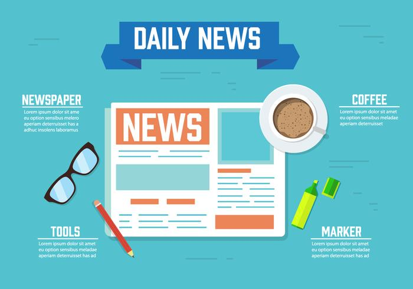

<ion-header>
  <ion-toolbar>
    <ion-title>Home</ion-title>
  </ion-toolbar>
</ion-header>

<ion-content>
  <!-- Informações da Aplicação -->
  <ion-card>
    
    <ion-card-header>
      <ion-card-subtitle>version: alpha 0.1v</ion-card-subtitle>
      <ion-card-title>myNews App</ion-card-title>
    </ion-card-header>
  
    <ion-card-content>
      myNews é um app de notícias com base na API do google news.
      Criado para a avaliação da matéria de Desenvolvimento Móvel.
    </ion-card-content>
  </ion-card>
  <!-- Informações do Desenvolver -->
  <ion-card>
    
    <ion-card-header>
      <ion-card-subtitle>Graduação em Ciência da Computação</ion-card-subtitle>
      <ion-card-title>Developer: Jessica Lessa Barbosa</ion-card-title>
    </ion-card-header>
  
    <ion-card-content>
      <p>Nome: Jessica Lessa Barbosa</p>
      <p>Curso: Ciência da Computação</p>
      <p>Matrícula: 18100421</p>
      <p>Semestre: 6º Semestre</p>
    </ion-card-content>
      <ion-item>
        <ion-router-link href="https://web.facebook.com/jessica.lessabarbosa"><ion-icon name="logo-facebook"></ion-icon></ion-router-link>
        <ion-router-link href="https://twitter.com/jesselbarbosa"><ion-icon name="logo-twitter"></ion-icon></ion-router-link>
        <ion-router-link href="https://www.linkedin.com/in/jessica-lessa-barbosa/"><ion-icon name="logo-linkedin"></ion-icon></ion-router-link>
        <ion-router-link href="https://github.com/JessicaLBarbosa"><ion-icon name="logo-github"></ion-icon></ion-router-link>
      </ion-item>
    
  </ion-card>
</ion-content>
